模型展示
68 件茶屋家具与设施、13 种星渊怪物与首领的 3D 模型渲染图
服务器里的 3D 模型一览：68 件茶屋家具 / 设施，和星渊秘境的 13 种怪物与首领。图片都是材质包模型的渲染图（统一 45° 斜上方视角；不是游戏截图），游戏里的光照和大小会略有不同。
茶屋家具模型
按柚子家具馆的分类排列，名字下面是尺寸、价格和家具馆里的介绍。
🪑 座椅（8）
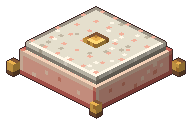
🛋 芝芝软垫坐垫1×1 · 240 币 · 摆在木地板上 · 右键直接坐下歇息（按 Shift 起身）
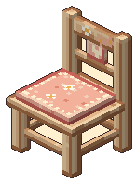
🪑 樱木靠背椅1×1 · 260 币 · 樱木靠背椅配樱花坐垫 · 右键坐下
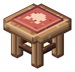
🪵 茶屋圆木凳1×1 · 160 币 · 茶屋吧台常用的圆木凳 · 右键坐下
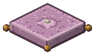
🟪 紫藤坐垫1×1 · 150 币 · 紫藤色方坐垫，绣着鼠鼠家纹 · 右键坐下
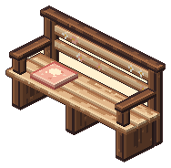
🌸 樱花长椅2×1 · 520 币 · 两格宽的樱花木长椅 · 两个位置都能坐
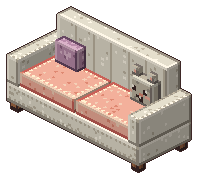
🛋 鼠鼠软沙发2×1 · 880 币 · 两格宽软沙发，靠着鼠鼠抱枕 · 两个位置都能坐
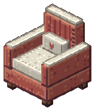
🧶 暖绒扶手椅1×1 · 420 币 · 红绒扶手椅，冬天坐着最暖 · 右键坐下
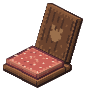
🎋 和室靠背座椅1×1 · 300 币 · 和室地板用的靠背座椅 · 右键坐下
🍵 桌台（6）
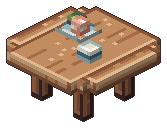
🍡 圆矮桌1×1 · 280 币 · 放着樱饼和茶杯的圆矮桌 · 右键敲敲桌面
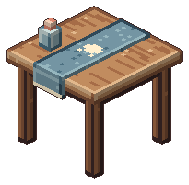
🍵 茶室方桌1×1 · 360 币 · 铺着靛蓝桌旗的茶室方桌 · 右键敲敲桌面
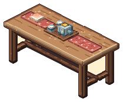
🫖 长茶桌2×1 · 640 币 · 两格长茶桌，摆着茶盘茶壶 · 右键敲敲桌面
📚 读书写字桌2×1 · 580 币 · 两格写字桌，带三层抽屉 · 右键查看/写家园留言簿（/guestbook）
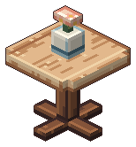
🌷 樱花小边几1×1 · 200 币 · 插着一枝樱花的小边几 · 右键赏花
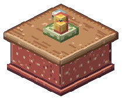
🍊 暖桌被炉1×1 · 480 币 · 冬天必备的暖桌被炉，桌上一筐蜜柑 · 右键暖暖手
📚 收纳·床铺（9）
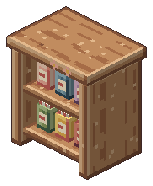
🍓 祝尼魔果酱展示架1×1 · 480 币 · 冬季献祭解锁 · 摆满果酱罐的小木架，右键飘散果香
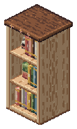
📖 樱木书架1×1×2 · 560 币 · 两格高的樱木书架，装满书和小摆件 · 右键打开我的档案（/profile）
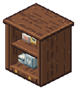
🫖 茶具柜1×1 · 420 币 · 收着茶壶茶杯和茶罐的木柜（纯装饰，不能存东西）
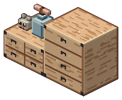
🗄 桐木阶梯柜2×1 · 680 币 · 两格宽的桐木阶梯柜，铁件拉环（纯装饰）
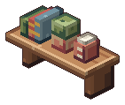
🪵 墙上小木架1×1 · 180 币 · 挂在墙上的小木架（右键方块侧面挂上）
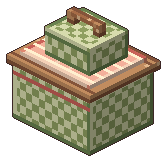
🧺 竹编收纳篮1×1 · 160 币 · 竹编收纳篮，叠着毛巾（纯装饰）
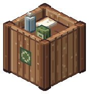
♻ 回收木箱1×1 · 环保 500 分自动发放 · 环保 500 分奖励 · 右键直接打开环保回收站
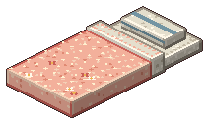
🌸 樱花被褥1×2 · 600 币 · 一格宽两格长的樱花被褥 · 右键上去歇一会
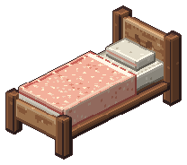
🛏 鼠鼠木框床1×2 · 960 币 · 床头刻着鼠鼠家纹的木框床 · 右键上去歇一会（不改出生点）
🏮 灯具（8）
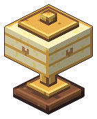
🏮 暖黄小台灯1×1 · 320 币 · 提供柔和真光源 · 右键可随时开关台灯
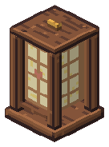
🏮 纸行灯1×1 · 360 币 · 纸糊行灯，真光源 · 右键开关
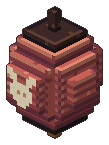
🏮 红纸灯笼1×1 · 300 币 · 红纸灯笼，真光源（右键方块底面挂上）· 右键开关
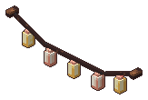
✨ 樱花串灯2×1 · 380 币 · 两格宽的樱花串灯，真光源（右键方块底面挂上）· 右键开关
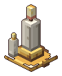
🕯 铜烛台1×1 · 140 币 · 铜烛台，真光源 · 右键点亮 / 吹灭
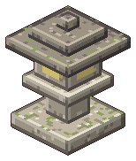
🪨 石灯笼1×1 · 480 币 · 庭院石灯笼，真光源 · 右键点亮 / 熄灭
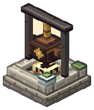
🫖 守夜小茶炉1×1 · 星辉兑换所 4 枚星辉徽章 · 星辉兑换所纪念炉，真光源 · 右键品守夜热茶回血并播报星渊纪录
 🔮 雾沼紫晶灯1×1 · 首通第 5 层后，星辉兑换所 6 枚星辉徽章 · 星辉兑换所纪念紫晶灯，真光源 · 右键点亮 / 熄灭并飘落星尘
🔮 雾沼紫晶灯1×1 · 首通第 5 层后，星辉兑换所 6 枚星辉徽章 · 星辉兑换所纪念紫晶灯，真光源 · 右键点亮 / 熄灭并飘落星尘
🍚 厨房（5）
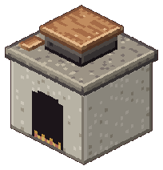
🍳 3D 茶屋烹饪灶台1200 币 · 右键家常料理 + 宴席大餐
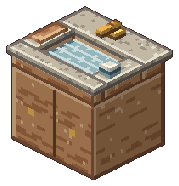
🚰 洗碗台1×1 · 440 币 · 带水龙头的洗碗台 · 右键哗啦啦洗碗
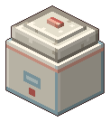
🍚 鼠鼠电饭煲1×1 · 220 币 · 鼠鼠耳朵的电饭煲 · 右键看看饭好了没
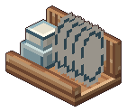
🍽 碗碟架1×1 · 180 币 · 晾着青花盘子和茶碗的碗碟架
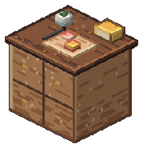
🔪 料理台1×1 · 360 币 · 料理台，砧板上切着萝卜和蜜柑 · 右键打开茶屋食谱
🖼 墙饰·地毯（9）
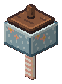
🎐 晴天风铃1×1 · 280 币 · 可挂在屋檐底面或摆在台面 · 右键拨响清脆铃音
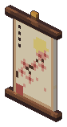
🖼 樱花挂轴1×1 · 260 币 · 月下樱枝挂轴（右键方块侧面挂上）
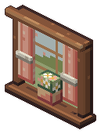
🪟 格子窗（带窗帘）1×1 · 340 币 · 带粉窗帘的格子窗，窗台有小花（右键方块侧面挂上）
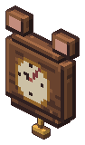
🕰 鼠鼠挂钟1×1 · 300 币 · 鼠鼠耳朵挂钟（右键方块侧面挂上）· 右键报游戏时间和季节
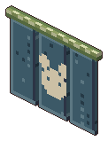
🎏 鼠纹暖帘1×1 · 240 币 · 靛蓝鼠纹暖帘（右键方块侧面挂上）· 访客右键为屋主点赞送花（/like）
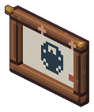
🏯 鼠鼠家纹匾额1×1 · 320 币 · 鼠鼠家纹匾额（右键方块侧面挂上）
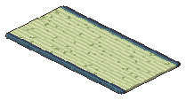
🟩 榻榻米2×1 · 300 币 · 两格榻榻米，铺在地上还能在上面摆家具
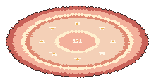
🌸 樱花圆地毯2×2 · 460 币 · 2×2 樱花圆地毯，铺好后上面还能摆家具
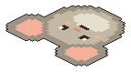
🐭 鼠鼠脚垫1×1 · 140 币 · 鼠鼠头形状的脚垫，上面还能摆家具
🌿 绿植（6）
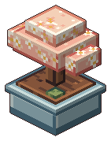
🌸 星露樱花盆栽1×1 · 280 币 · 茶屋桌台盆栽 · 右键赏花飘落樱花花瓣
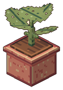
🌿 龟背竹大盆栽1×1 · 260 币 · 龟背竹大盆栽，叶子上有小孔 · 右键浇浇水
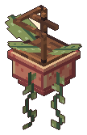
🪴 吊篮绿萝1×1 · 220 币 · 吊篮绿萝（右键方块底面挂上）· 右键浇水
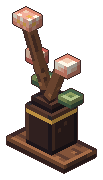
💐 生花花器1×1 · 280 币 · 黑漆花器插着樱枝 · 右键赏花
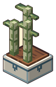
🎍 竹子盆景1×1 · 260 币 · 青花盆里的三根小竹子 · 右键听竹响
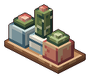
🌵 窗台多肉三连1×1 · 160 币 · 窗台三盆小多肉，仙人掌还开了花
🐭 鼠鼠茶屋（9）
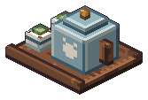
🍵 桌面茶具1×1 · 260 币 · 摆在桌面 · 右键可品茶回血并冒出热茶蒸汽
🌿 祝尼魔毛绒玩偶1×1 · 560 币 · 冬季献祭解锁 · 可爱森林祝尼魔，右键捏一捏有萌音
🐭 鼠鼠大玩偶1×1 · 420 币 · 穿着茶屋围裙的鼠鼠大玩偶 · 右键抱一抱
🧾 茶屋收银柜台2×1 · 1080 币 · 两格宽茶屋收银柜台，有迎客铃 · 右键打开店主箱子店（/cshop）
📋 茶屋立式菜单1×1 · 220 币 · 粉笔写的茶屋立式菜单板 · 右键打开茶屋食谱
💰 招财鼠1×1 · 380 币 · 举爪招财的招财鼠，抱着小判金币 · 右键抽今日运势签
🏺 茶壶展示台1×1 · 460 币 · 青瓷壶和朱泥壶的展示台 · 右键欣赏
🐾 萌宠藤编小窝1×1 · 380 币 · 萌宠藤编小窝 · 右键打开萌宠乐园（/pet 召唤与喂食）
📮 鼠鼠迎客邮筒1×1 · 320 币 · 鼠鼠迎客邮筒 · 主人看留言簿，访客右键看留言并快捷点赞送花
⚒ 工作台（8）
♨ 铁壶炭炉1×1 · 320 币 · 炭炉上坐着铁壶 · 右键倒一杯热茶（回血）· 潜行右键打开茶屋工坊（站点 +15%）
🍶 茶屋发酵木桶1×1 · 480 币 · 茶屋工坊站点（同木桶）· 右键打开茶屋工坊，制作快 15%
🧱 烘焙石窑1×1 · 680 币 · 茶屋工坊站点（同营火）· 右键打开茶屋工坊，制作快 15%
⚒ 星露铁砧台1×1 · 880 币 · 锻造坊的实体入口 · 右键打开锻造坊（/forge）
💎 鉴宝台1×1 · 680 币 · 晶洞鉴宝的实体入口 · 右键打开晶洞鉴宝（/geode）
📜 委托告示板1×1 · 360 币 · 挂在墙上的委托板（右键方块侧面挂上）· 右键打开委托板（/order）
💍 饰品梳妆台1×1 · 520 币 · 饰品匣的实体入口 · 右键打开饰品匣（/accessory）
📦 茶屋出货箱1×1 · 420 币 · 茶屋出货箱 · 右键一键卖出主背包物产（同 /sell 规则与额度）
星渊怪物与首领模型
星渊井下的怪物按区域出现；金框是首领。宝箱怪（宝箱房里 20% 的宝箱）没有专属模型，所以不在这里。
初代茶庭 · 1–5 层
🌿 苔衣石守1–5 层小怪 / 精英举手 1.4 秒黄光后重砸正前方，砸完卡地 2.5 秒——侧滚躲开，绕背输出
🌸 散樱浪人1–5 层小怪 / 精英三连斩：前两刀白光能弹反（第二刀弹反打断），第三刀红光只能翻滚
🐀 窃星鼠1–5 层、11–15 层；天象「鼠鼠过街」更多一窝 2–3 只，不打人，专偷地上的星尘；15 秒内追上打死拿回双倍
🌳 初代茶樱·落英第 5 层首领不移动的樱树灵：枝鞭横扫（白光，弹反后踉跄），60% 血进二阶段召散樱浪人、地下根须缠人
雾沼晶窟 · 6–10 层
🐸 雾沼鸣蛙6–10 层小怪 / 精英鼓腮吐舌把人拉到面前（举盾弹反反把蛙拉过来），还会起跳砸黄圈
🏮 迷途灯笼6–10 层、11–15 层小怪飘在空中保持距离扔火球；被弓箭射中就熄灭掉地，可以处决
💎 晶棘球6–10 层小怪 / 精英缩成球直线滚撞（黄光），撞墙眩晕 3 秒可处决；贴身打它会翻身甩刺
 💜 晶窟织主·紫绡第 10 层首领吐丝定身（黄）、埋晶刺地雷（红），每 50 秒孵 3 只小晶蛛；腹部晶心发光时是弱点
🕷 小晶蛛第 10 层 · 紫绡孵出紫绡的卵孵出的小蛛，40 秒没清掉就会长大
💜 晶窟织主·紫绡第 10 层首领吐丝定身（黄）、埋晶刺地雷（红），每 50 秒孵 3 只小晶蛛；腹部晶心发光时是弱点
🕷 小晶蛛第 10 层 · 紫绡孵出紫绡的卵孵出的小蛛，40 秒没清掉就会长大
千灯夜市 · 11–15 层
🫖 沸壶付丧11–15 层小怪 / 精英壶盖跳动后朝前方喷 3 秒蒸汽（黄）；过热冒白烟时韧性涨双倍，绕背打跪
🕯 提灯守夜人11–15 层小怪 / 精英举灯 1.2 秒后范围致盲（红，挡不住）——看到举灯就把视角转开
🏮 祭会大灯第 15 层 · 烛夜点亮烛夜开打点亮 4 盏，灯亮着祭主刀枪不入；全部打灭它跪地 6 秒
 🏮 千灯祭主·烛夜第 15 层首领三连火掌、举灯落火；50% 血进二阶段，会瞬移到灯旁专打去灭灯的人
🏮 千灯祭主·烛夜第 15 层首领三连火掌、举灯落火；50% 血进二阶段，会瞬移到灯旁专打去灭灯的人